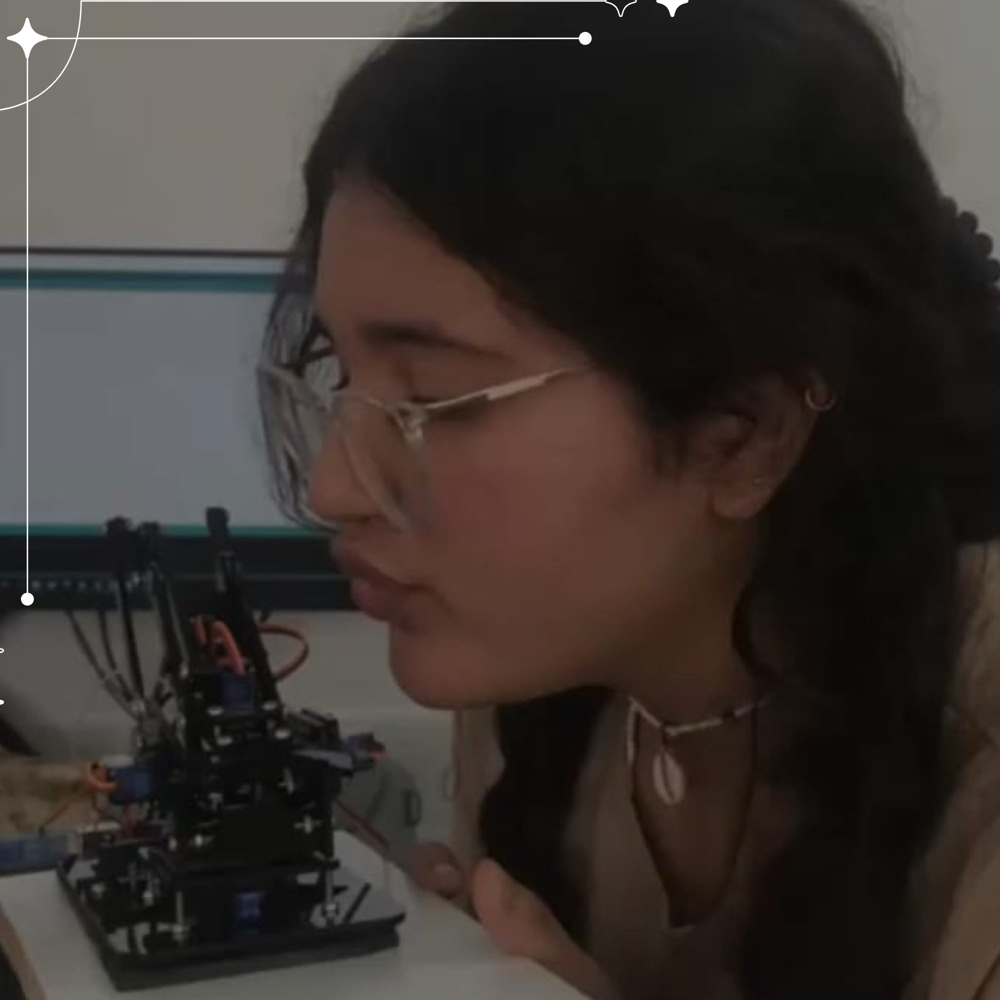
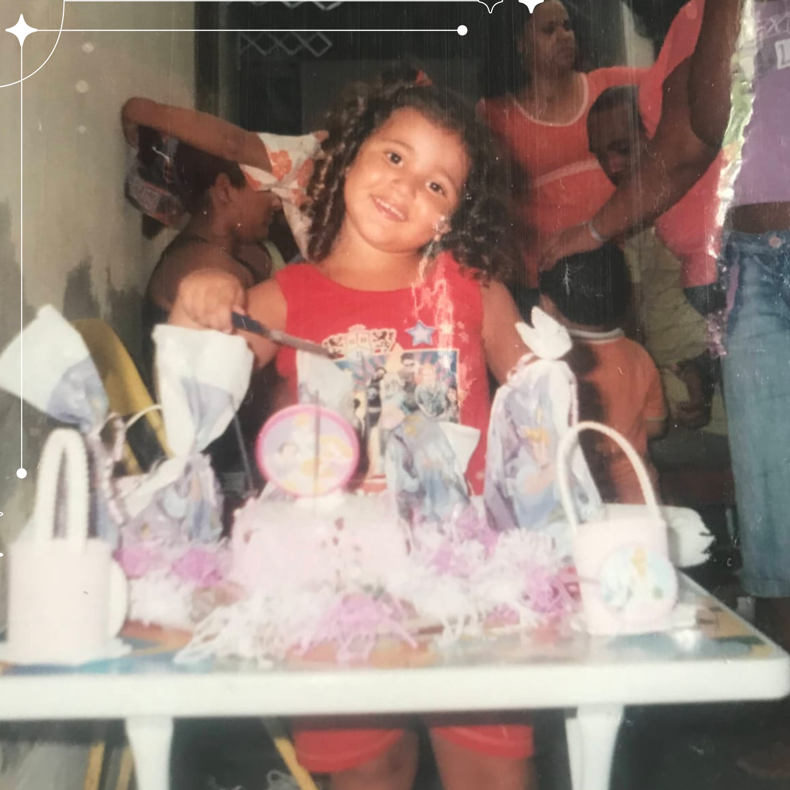

Sobre mim
-

Realizando o Sonho da Graduação
Meu caminho na tecnologia começou cedo, cursando o Ensino Médio junto ao Técnico em Informática no IFRJ. Hoje, sigo realizando o sonho de estudar em uma instituição de referência como graduanda em Sistemas de Informação no CEFET/RJ. Ser a segunda pessoa da minha família a chegar à faculdade, inspirada pela trajetória da minha irmã na Odontologia, me motiva a aproveitar cada oportunidade de aprendizado e inovação que o ensino público de qualidade me proporciona.
-

Minhas raízes
São Gonçalo é terra de gente que sonha alto e brilha, de Seu Jorge a Buchecha. Como uma boa gonçalense, compartilho dessa paixão e do desejo de ir além. Minha jornada me trouxe a Nova Friburgo, onde foco total na minha formação técnica e superior, aguardando com entusiasmo os desafios que o futuro reserva para uma desenvolvedora que nunca esquece de onde veio.